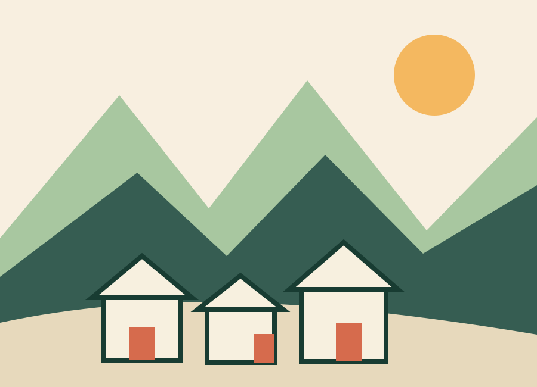

Pourquoi ce site
Le projet
Créer un média local utile, personnel et transparent, sans se présenter comme un office de tourisme.

Un guide indépendant
Aravis Deux Versants est un projet éditorial privé. Il rassemble des recommandations, portraits, itinéraires et contenus pratiques consacrés principalement à La Giettaz, au col des Aravis et à La Clusaz.
Le site n’est ni mandaté, ni exploité par une commune, un office de tourisme ou un domaine skiable.
Une sélection assumée
Les « favoris » sont des préférences personnelles de l’éditeur. Ils ne prétendent pas constituer un palmarès objectif. Les informations factuelles sont vérifiées autant que possible, puis datées dans la page Sources et mises à jour.
Une activité professionnelle clairement identifiée
Aravis Parapente est l’activité commerciale de l’éditeur. Elle bénéficie d’une page dédiée, mais son lien avec le guide est annoncé explicitement.
Partenariats
Une adresse peut être ajoutée gratuitement selon l’intérêt éditorial. Toute rémunération, invitation ou avantage ayant une influence sur la publication doit être signalé par une mention visible telle que « Partenaire » ou « Contenu sponsorisé ».